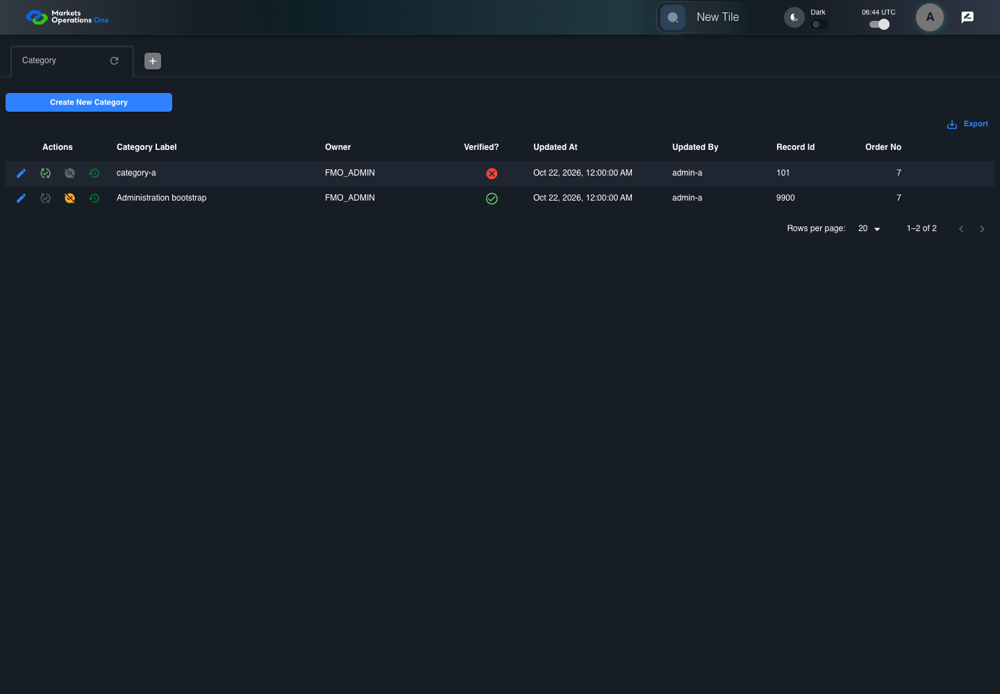
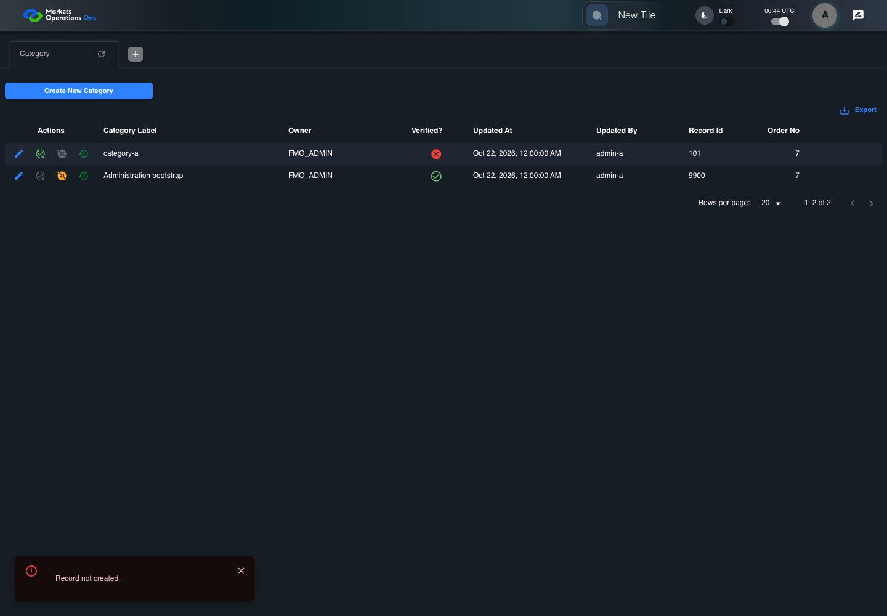

All canonical cases
BFF-ADM-050: Reconcile Category after audit write fails Business acceptance remains unverified. Owner: unknown. Review the canonical definition and fixture limits before acceptance.
Latest local result: PASS Business acceptance: NOT_ESTABLISHED.
The latest local result describes execution. The historical definition review assesses the case design before execution.
Latest step screenshot evidence: COMPLETE . 8/8 canonical steps have execution screenshots.
Canonical Gherkin definition . Definition version: 2. SHA-256: 334d68bc4c612be822a27c702870b8241b82a247ab038d3e6754759c7b3cfabc.
Historical definition review (preflight): UNVERIFIED A definition review FAIL can coexist with local PASS. The definition failed preflight quality checks.
This historical review does not change the latest execution result. Resolve definition gaps before business acceptance.
Canonical Gherkin steps Feature: Admin persistence
@BFF-ADM-050
Scenario: Reconcile Category after audit write fails
Given Admin A uses subject "admin-a" with role "FMO_ADMIN" in an isolated authenticated browser
And the controlled Category fixture records the initial grid rows and persisted values
And the Category primary save persists record 101 before its controlled audit write fails
And Admin A has received the error response for that save
When Admin A reloads the browser page containing Category administration page
Then the Category data grid contains exactly one row with "Record Id" equal to "101" on the Category administration page
And in the Category data grid with column "Record Id", that row displays the values returned by the persisted-record readback on the Category administration page
And the request log contains no additional create request after the reload Acceptance and evidence limits: NO_COMPLETE_REAL_APPLICATION_BINDING, CANONICAL_REVIEW_OR_EVIDENCE_UNRESOLVED.
Planned essential canonical frames: 2. Plan completeness requires separate review.
Latest attempt BFF-ADM-050 current BFF administration through actual UI PASS · application/run-072/bff-adm-050-current-bff-administration-through-actual-ui-da30ea685a51-attempt-1 · ACTUAL_APPLICATION_LOCAL_SERVICES
Actual current React and exact-current BFF admin controllers/services/JPA with actual migration DDL in disposable PostgreSQL. Controlled OUD/EMS2 identities and local Spring bootstrap. Fixture SQL seeds/mutates isolated records; service errors are actual database errors. Undefined agreed messages remain unresolved acceptance.
2026-10-22T06:44:01.938Z to 2026-10-22T06:44:07.957Z
Assertions and result · Artifact manifest · Exact run inputs and source hashes
Result SHA-256: c25fb8d681dbf5d3f90da574dbf2c2c106d8374b4ffe3f75821ab0ee7ba5d98d Playwright trace
Machine observations Screenshot capture: CAPTURED. Named frames: 9.
Step screenshot evidence: COMPLETE. 8/8 canonical steps have execution screenshots.
Canonical step timeline Given Admin A uses subject "admin-a" with role "FMO_ADMIN" in an isolated authenticated browser

1. step-01 Visible state after step 1: Given Admin A uses subject "admin-a" with role "FMO_ADMIN" in an isolated authenticated browser
2026-10-22T06:44:04.313Z · 1440×100051f7a4249a6f79371fd346bbe5a656e560dfd5c21d85d6a74db75509cb044c53 And the controlled Category fixture records the initial grid rows and persisted values
2. step-02 Visible state after step 2: And the controlled Category fixture records the initial grid rows and persisted values
2026-10-22T06:44:04.474Z · 1440×100051f7a4249a6f79371fd346bbe5a656e560dfd5c21d85d6a74db75509cb044c53 And the Category primary save persists record 101 before its controlled audit write fails

3. step-03 Visible state after step 3: And the Category primary save persists record 101 before its controlled audit write fails
2026-10-22T06:44:05.359Z · 1440×1000071d2f7e89cc192004a5f5213e2e3842c8d6418860269ce26b8e2d4347cdbd08 And Admin A has received the error response for that save
4. step-04 Visible state after step 4: And Admin A has received the error response for that save
2026-10-22T06:44:05.424Z · 1440×1000071d2f7e89cc192004a5f5213e2e3842c8d6418860269ce26b8e2d4347cdbd08 When Admin A reloads the browser page containing Category administration page
5. step-05 Visible state after step 5: When Admin A reloads the browser page containing Category administration page
2026-10-22T06:44:07.152Z · 1440×1000af44c1e8df9f8ad1cbfe4689baffaeba14417804d70e7c64b1530bf86bcd8f1c Then the Category data grid contains exactly one row with "Record Id" equal to "101" on the Category administration page
6. step-06 Visible state after step 6: Then the Category data grid contains exactly one row with "Record Id" equal to "101" on the Category administration page
2026-10-22T06:44:07.218Z · 1440×1000af44c1e8df9f8ad1cbfe4689baffaeba14417804d70e7c64b1530bf86bcd8f1c And in the Category data grid with column "Record Id", that row displays the values returned by the persisted-record readback on the Category administration page
7. step-07 Visible state after step 7: And in the Category data grid with column "Record Id", that row displays the values returned by the persisted-record readback on the Category administration page
2026-10-22T06:44:07.336Z · 1440×1000af44c1e8df9f8ad1cbfe4689baffaeba14417804d70e7c64b1530bf86bcd8f1c And the request log contains no additional create request after the reload
8. step-08 Visible state after step 8: And the request log contains no additional create request after the reload
2026-10-22T06:44:07.402Z · 1440×1000af44c1e8df9f8ad1cbfe4689baffaeba14417804d70e7c64b1530bf86bcd8f1c Additional named frames 9. final-result The final visible state after the named test assertions.
2026-10-22T06:44:07.518Z · 1440×1000af44c1e8df9f8ad1cbfe4689baffaeba14417804d70e7c64b1530bf86bcd8f1c Screenshots establish visible state only. Assertions and traces support functional claims.
Earlier attempt history (2) Earlier attempt PASS (superseded by latest PASS) BFF-ADM-050 current BFF administration through actual UI PASS · application/run-066/bff-adm-050-current-bff-administration-through-actual-ui-da30ea685a51-attempt-1 · ACTUAL_APPLICATION_LOCAL_SERVICES
Actual current React and exact-current BFF admin controllers/services/JPA with actual migration DDL in disposable PostgreSQL. Controlled OUD/EMS2 identities and local Spring bootstrap. Fixture SQL seeds/mutates isolated records; service errors are actual database errors. Undefined agreed messages remain unresolved acceptance.
2026-10-22T06:24:08.098Z to 2026-10-22T06:24:11.897Z
Assertions and result · Artifact manifest · Exact run inputs and source hashes
Result SHA-256: 5e82966917cd664c78f7a897e0b8306542c317486d366e588207971a58fbcc0b Playwright trace
Machine observations Screenshot capture: CAPTURED. Named frames: 9.
Step screenshot evidence: COMPLETE. 8/8 canonical steps have execution screenshots.
Canonical step timeline Given Admin A uses subject "admin-a" with role "FMO_ADMIN" in an isolated authenticated browser
1. step-01 Visible state after step 1: Given Admin A uses subject "admin-a" with role "FMO_ADMIN" in an isolated authenticated browser
2026-10-22T06:24:09.592Z · 1440×100034d5909768386dd0adf8f1700220aedbd94fbad36d01897e306247f6bf4cb133 And the controlled Category fixture records the initial grid rows and persisted values
2. step-02 Visible state after step 2: And the controlled Category fixture records the initial grid rows and persisted values
2026-10-22T06:24:09.706Z · 1440×100034d5909768386dd0adf8f1700220aedbd94fbad36d01897e306247f6bf4cb133 And the Category primary save persists record 101 before its controlled audit write fails
3. step-03 Visible state after step 3: And the Category primary save persists record 101 before its controlled audit write fails
2026-10-22T06:24:10.391Z · 1440×10003b8e62404355dd5e393cd4dfde5d26386386efb4d254cc27e201761aabd59670 And Admin A has received the error response for that save
4. step-04 Visible state after step 4: And Admin A has received the error response for that save
2026-10-22T06:24:10.422Z · 1440×10003b8e62404355dd5e393cd4dfde5d26386386efb4d254cc27e201761aabd59670 When Admin A reloads the browser page containing Category administration page
5. step-05 Visible state after step 5: When Admin A reloads the browser page containing Category administration page
2026-10-22T06:24:11.473Z · 1440×100029c92ccefb16627b03aebb8fb20b20ed2dd2a30d9e1a44abd7f06b7bd719659c Then the Category data grid contains exactly one row with "Record Id" equal to "101" on the Category administration page
6. step-06 Visible state after step 6: Then the Category data grid contains exactly one row with "Record Id" equal to "101" on the Category administration page
2026-10-22T06:24:11.504Z · 1440×1000f6a79b9aeb6b39b93d67845c90f8dfaf25847e64854e2ace5fce2cd89413e842 And in the Category data grid with column "Record Id", that row displays the values returned by the persisted-record readback on the Category administration page
7. step-07 Visible state after step 7: And in the Category data grid with column "Record Id", that row displays the values returned by the persisted-record readback on the Category administration page
2026-10-22T06:24:11.588Z · 1440×1000f6a79b9aeb6b39b93d67845c90f8dfaf25847e64854e2ace5fce2cd89413e842 And the request log contains no additional create request after the reload
8. step-08 Visible state after step 8: And the request log contains no additional create request after the reload
2026-10-22T06:24:11.621Z · 1440×100029c92ccefb16627b03aebb8fb20b20ed2dd2a30d9e1a44abd7f06b7bd719659c Additional named frames 9. final-result The final visible state after the named test assertions.
2026-10-22T06:24:11.688Z · 1440×100029c92ccefb16627b03aebb8fb20b20ed2dd2a30d9e1a44abd7f06b7bd719659c Screenshots establish visible state only. Assertions and traces support functional claims.
Earlier attempt PASS (superseded by latest PASS) BFF-ADM-050 current BFF administration through actual UI PASS · application/run-062/bff-adm-050-current-bff-administration-through-actual-ui-da30ea685a51-attempt-1 · ACTUAL_APPLICATION_LOCAL_SERVICES
Actual current React and exact-current BFF admin controllers/services/JPA with actual migration DDL in disposable PostgreSQL. Controlled OUD/EMS2 identities and local Spring bootstrap. Fixture SQL seeds/mutates isolated records; service errors are actual database errors. Undefined agreed messages remain unresolved acceptance.
2026-10-22T06:01:35.255Z to 2026-10-22T06:01:41.815Z
Assertions and result · Artifact manifest · Exact run inputs and source hashes
Result SHA-256: e058c7558886e0dcd1b5351f1be0f3f515768c4897719eec244da00f4768d414 Playwright trace
Machine observations Screenshot capture: CAPTURED. Named frames: 9.
Step screenshot evidence: COMPLETE. 8/8 canonical steps have execution screenshots.
Canonical step timeline Given Admin A uses subject "admin-a" with role "FMO_ADMIN" in an isolated authenticated browser
1. step-01 Visible state after step 1: Given Admin A uses subject "admin-a" with role "FMO_ADMIN" in an isolated authenticated browser
2026-10-22T06:01:37.781Z · 1440×10007cff2189faad5dfc14773f738f94577b431cdbb977c5358fab1cff895a433e61 And the controlled Category fixture records the initial grid rows and persisted values
2. step-02 Visible state after step 2: And the controlled Category fixture records the initial grid rows and persisted values
2026-10-22T06:01:37.988Z · 1440×10007cff2189faad5dfc14773f738f94577b431cdbb977c5358fab1cff895a433e61 And the Category primary save persists record 101 before its controlled audit write fails
3. step-03 Visible state after step 3: And the Category primary save persists record 101 before its controlled audit write fails
2026-10-22T06:01:38.826Z · 1440×1000599719969568d87031da00333b503ada7ab806ee7e47469b3803c0d62c70b751 And Admin A has received the error response for that save
4. step-04 Visible state after step 4: And Admin A has received the error response for that save
2026-10-22T06:01:38.895Z · 1440×1000599719969568d87031da00333b503ada7ab806ee7e47469b3803c0d62c70b751 When Admin A reloads the browser page containing Category administration page
5. step-05 Visible state after step 5: When Admin A reloads the browser page containing Category administration page
2026-10-22T06:01:40.772Z · 1440×10006bc592e9dde5523491dd2a1b8791b1fce417890b9a381793f8f4b7a282138c1b Then the Category data grid contains exactly one row with "Record Id" equal to "101" on the Category administration page
6. step-06 Visible state after step 6: Then the Category data grid contains exactly one row with "Record Id" equal to "101" on the Category administration page
2026-10-22T06:01:40.853Z · 1440×10006bc592e9dde5523491dd2a1b8791b1fce417890b9a381793f8f4b7a282138c1b And in the Category data grid with column "Record Id", that row displays the values returned by the persisted-record readback on the Category administration page
7. step-07 Visible state after step 7: And in the Category data grid with column "Record Id", that row displays the values returned by the persisted-record readback on the Category administration page
2026-10-22T06:01:40.953Z · 1440×10006bc592e9dde5523491dd2a1b8791b1fce417890b9a381793f8f4b7a282138c1b And the request log contains no additional create request after the reload
8. step-08 Visible state after step 8: And the request log contains no additional create request after the reload
2026-10-22T06:01:41.019Z · 1440×10006bc592e9dde5523491dd2a1b8791b1fce417890b9a381793f8f4b7a282138c1b Additional named frames 9. final-result The final visible state after the named test assertions.
2026-10-22T06:01:41.140Z · 1440×10006bc592e9dde5523491dd2a1b8791b1fce417890b9a381793f8f4b7a282138c1b Screenshots establish visible state only. Assertions and traces support functional claims.